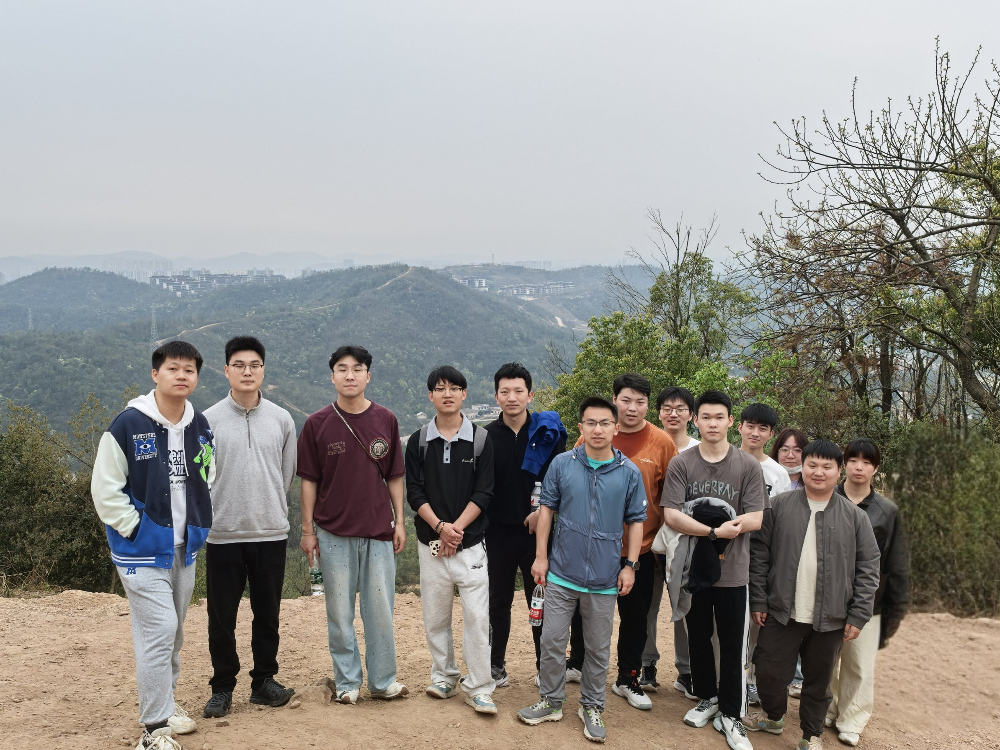

Kailun Yang 杨恺伦
导航
首页 (Index)
课题组风采 (Gallery)
课题组团队 (Team)
Publications
其他外链 (Links)
ResearchGate
DBLP
arXiv
Computer Vision for Panoramic Understanding Lab (cv:pu)

PhD Students
Fei Teng
, PhD student at HNU (Topic: Panoramic Understanding).
Kai Luo
, PhD student at HNU (Topic: Spatiotemporal Understanding).
Guoqiang Zhao
, PhD student at HNU (Topic: RGB-X Scene Understanding).
Yuanfan Zheng
, PhD student at HNU (Topic: Trustworthy Scene Understanding).
Mengfei Duan
, PhD student at HNU (Topic: Out-of-Distribution Understanding), Co-advising with
Prof. Zhiyong Li
.
Wanjun Jia
, PhD student at HNU (Topic: Affordance Understanding), Co-advising with
Prof. Zhiyong Li
.
Siyu Li
, PhD student at HNU (Topic: BEV Scene Understanding), Co-advising with
Prof. Zhiyong Li
.
Fan Yang
, PhD student at HNU (Topic: Affordance Understanding), Co-advising with
Prof. Wenrui Chen
and
Prof. Zhiyong Li
.
Master Students
Yizhou Huang
, Master student at HNU (Topic: Affordance Understanding), Co-advising with
Prof. Zhiyong Li
.
Jiayi Zhao
, Master student at HNU (Topic: RGB-X Scene Understanding), Co-advising with
Prof. Zhiyong Li
.
Jiawei Liu
, Master student at HNU (Topic: Light-Field Scene Understanding), Co-advising with
Prof. Zhiyong Li
.
Kang Zeng
, Master student at HNU (Topic: Moving Object Segmentation), Co-advising with
Prof. Zhiyong Li
.
Xinying Hong
, Master student at HNU (Topic: Vectorized HD Map Construction), Co-advising with
Prof. Zhiyong Li
.
Yuheng Zhang
, Master student at HNU (Topic: Semantic Occupancy Prediction).
Sheng Wu
, Master student at HNU (Topic: Panoramic Generation).
Zhe Yang
, Master student at HNU (Topic: Panoramic Reconstruction).
Chunting Wang
, Master student at HNU (Topic: Driving Topology Reasoning).
Guoliang Zhu
, Master student at HNU (Topic: Affordance Understanding).
Kaixin Lin
, Master student at HNU (Topic: Missing View Understanding).
Wenxin Li
, Master student at HNU (Topic: Noisy Label Understanding).
Yuhang Wang
, Master student at HNU (Topic: Spatiotemporal Unerstanding).
Zhikun Zhou
, Master student at HNU (Topic: Language Gaussian Splatting).
Pujun Guo
, Master student at HNU (Topic: Scene Understanding).
Zhihao Lin
, Master student at HNU (Topic: Realistic Reconstruction), Co-advising with
Prof. Xinqi Liu
.
Yu Zheng
, Master student at HNU (Topic: Scene Understanding).
Weixing Feng
, Master student at HNU (Topic: Scene Understanding).
Di Kuang
, Master student at HNU (Topic: Scene Understanding).
Meilin Chen
, Master student at HNU (Topic: Scene Understanding).
Yi Xie
, Master student at HNU (Topic: Scene Understanding).
Buyin Deng
, Master student at HNU (Topic: Scene Understanding).
Shengmin Ou
, Master student at HNU (Topic: Scene Understanding).
Xinyi Li
, Master student at HNU (Topic: Scene Understanding).
External Students
Hao Shi
, PhD student at ZJU (Topic: Temporal Scene Understanding), Co-advising with
Prof. Kaiwei Wang
.
Xiaoting Yin
, PhD student at ZJU (Topic: Event-based Vision), Co-advising with
Prof. Kaiwei Wang
.
Qi Jiang
, PhD student at ZJU (Topic: Computational Imaging Solution to Minimalist Panoramic Optical System and Related Applications), Co-advising with
Prof. Kaiwei Wang
.
Ruiping Liu
, PhD student at KIT (Topic: Seamless Efficiency for Visual Perception in Assistive Systems), Co-advising with
Prof. Rainer Stiefelhagen
and
Dr. Jiaming Zhang
.
Zhonghua Yi
, PhD student at ZJU (Topic: Dense Correspondence Estimation), Co-advising with
Prof. Kaiwei Wang
.
Yao Gao
, PhD student at ZJU (Topic: End-to-End Computational Imaging), Co-advising with
Prof. Kaiwei Wang
.
Xiaolong Qian
, PhD student at ZJU (Topic: Computational Aberration Correction), Co-advising with
Prof. Kaiwei Wang
.
Former Master Students
Daniel Bucher
, Master student at KIT (Topic:
Improving Robustness of 3D Semantic Segmentation via Transformer-based Fusion and Knowledge Distillation
), Co-advised with
Jiaming Zhang
.
Yu Li
, Master student at KIT (Topic:
Fisheye Semantic Completion: Unifying Extrapolation and Semantic Completion
), Co-advised with
Kunyu Peng
.
Now data scientist at HiRain Technologies Europe.
Fei Teng
, Master student at KIT (Topic:
OAFuser: Towards Omni-Aperture Fusion for Light Field Semantic Segmentation
), Co-advised with
Jiaming Zhang
.
Now PhD student at HNU.
Ke Cao
, Master student at KIT (Topic:
Tightly-coupled LiDAR-visual SLAM Based on Geometric Features
), Co-advised with
Ze Wang
.
Now data scientist at Akkodis.
Zhifeng Teng
, Master student at KIT (Topic:
PanoBEV: Panoramic Semantic Mapping from Monocular Egocentric Images to Holistic Bird's Eye View
), Co-advised with
Jiaming Zhang
.
Now data scientist at Solarlab Aiko Europe.
Zihan Chen
, Master student at KIT (Topic:
Accessible Chemical Structural Formulas through Interactive Labeling
), Co-advised with
Merlin Knaeble
and
Dr. Thorsten Schwarz
.
Now data scientist at ZF Automotive Technologies.
Ruiping Liu
, Master student at KIT (Topic:
Transformer-based Knowledge Distillation for Efficient Semantic Segmentation
).
Now PhD student at KIT.
Xinyu Luo
, Master student at KIT (Topic:
Improving Semantic Segmentation of Accident Scenes via Multi-Source Mixed Sampling and Meta-Learning with Transformers
).
Now data scientist at Bank of Communication.
Qing Wang
, Master student at KIT (Topic:
MatchFormer: Interleaving Attention in Transformers for Feature Matching
), Co-advised with
Jiaming Zhang
.
Now data scientist at Huawei.
Wenyan Ou
, Master student at KIT (Topic:
Dynamic Visual SLAM with Semantic Information for Seeing Impaired People
).
Now data scientist at Continental.
Huayao Liu
, Master student at KIT (Topic:
Indoor Scene Understanding for the Visually Impaired Based on Semantic Segmentation
).
Now data scientist at NIO.
Alexander Jaus
, Master student at KIT (Topic:
Panoramic Panoptic Image Segmentation
).
Now PhD student at KIT.
Chaoxiang Ma
, Master student at KIT (Topic:
Unsupervised Domain Adaptation for Panoramic Semantic Segmentation
), Co-advised with
Jiaming Zhang
.
Now data scientist at ByteDance.
Shuo Chen
, Master student at KIT (Topic:
An Efficient Network for Scene Change Detection
).
Now data scientist at Z-ONE.
Yingzhi Zhang
, Master student at KIT (Topic:
Assisting the Visually Impaired Based on Scene Recognition and Semantic Segmentation
).
Now data scientist at ZongmuTech.
Lukas Vojkovic
, Master student at KIT (Topic:
Development and Evaluation of a Computer Vision Based Navigation System for the Visually Impaired
).
Jiaming Zhang
, Master student at KIT (Topic:
Semantic Segmentation in Accident Scenarios Based on Event Data
).
Now PostDoctoral researcher at KIT.
Haoye Chen
, Master student at KIT (Topic:
Semantic Visual Localization for Visually Impaired People
).
Now data scientist at ZF Automotive Technologies.
Wei Mao
, Master student at KIT (Topic:
Efficient Panoptic Segmentation for Navigating the Visually Impaired
).
Now data scientist at General Motors.